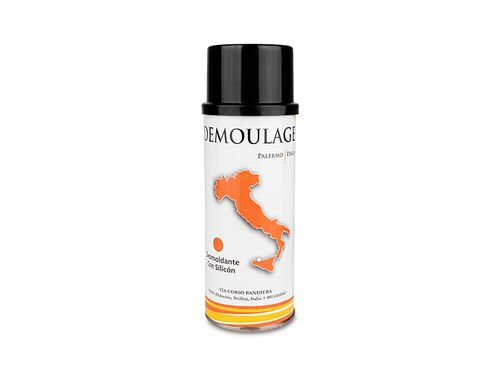
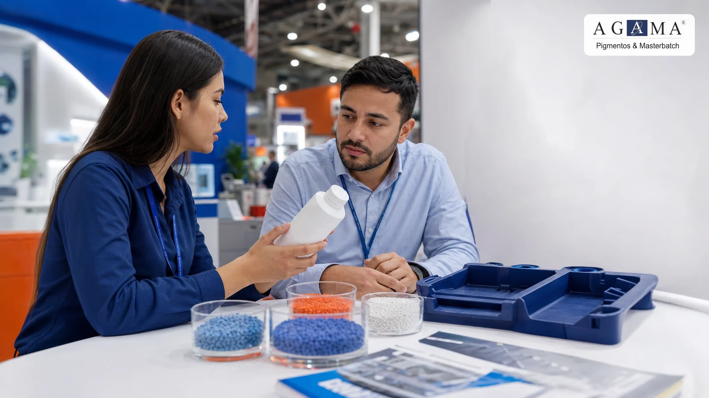

Proceso y liberación
Para revisar desmoldeo, deslizamiento, limpieza, flujo o comportamiento durante transformación.
AGAMA comercializa aditivos para plástico orientados a proceso, estabilidad y desempeño. La recomendación se revisa según resina, problema observado, temperatura, dosificación, aplicación final y resultado medible en planta.

Un aditivo se utiliza para modificar o mejorar un comportamiento específico del material o del proceso: liberación del molde, humedad, deslizamiento, protección, estabilidad, limpieza, apariencia o desempeño de la pieza.
La elección debe partir del problema real. Antes de cotizar conviene definir qué está pasando en planta, qué resina se usa, cómo se procesa y qué resultado se quiere medir.
No todos los aditivos resuelven el mismo problema. Separar la necesidad evita pedir una clave incorrecta y ayuda a plantear una prueba útil.
Para revisar desmoldeo, deslizamiento, limpieza, flujo o comportamiento durante transformación.
Para casos donde el material, la carga o el ambiente afectan proceso, apariencia o repetibilidad.
Para piezas que requieren una condición adicional de uso, apariencia o comportamiento final.
Estas imágenes quedan visibles en HTML con textos alternativos descriptivos y también se declaran como galería para asociarlas a aditivos para plástico, proceso y asesoría técnica.


Confirmamos el material base y si hay cargas, reciclado, pigmentos u otros componentes.
La recomendación cambia entre inyección, extrusión, soplado y condiciones de temperatura.
Debe existir un objetivo medible: liberar mejor, secar, proteger, limpiar, deslizar o estabilizar.
Comparte resina, proceso, problema observado, aplicación final, temperatura de trabajo, dosificación actual si existe y volumen estimado. Con esos datos AGAMA puede orientar mejor la compatibilidad antes de pasar a precio.
El aditivo debe revisarse con el proceso real. Cada enlace lleva al catálogo para consultar opciones disponibles.
Controlar: liberación, apariencia, temperatura, ciclo y estabilidad del material.
Ver aditivos para inyecciónControlar: humedad, flujo, limpieza, estabilidad y continuidad del proceso.
Ver aditivos para extrusiónControlar: comportamiento de pared, estabilidad, apariencia y condiciones de proceso.
Ver aditivos para sopladoSi ya identificaste el problema, entra al catálogo. Si todavía estás diagnosticando, solicita asesoría con datos de proceso.
Para piezas que se pegan, ciclos difíciles o ajustes de liberación.
Ver aditivos disponiblesPara materiales que requieren apoyo durante secado, proceso o repetibilidad.
Ver opciones del catálogoPara revisar qué ocurre en planta antes de elegir una clave.
Solicitar asesoríaContenido útil para preparar una conversación técnica antes de cotizar o probar aditivos.
Define problema de proceso, resina, temperatura, dosificación, acabado, aplicación y resultado medible.
Proceso, liberación de molde, humedad, protección, estabilidad, apariencia y desempeño según aplicación.
Comparte:
No. El catálogo ayuda a revisar opciones; la selección debe validarse según resina, proceso y prueba real.
Revisa opciones disponibles o solicita cotización con resina, proceso, problema y volumen estimado.